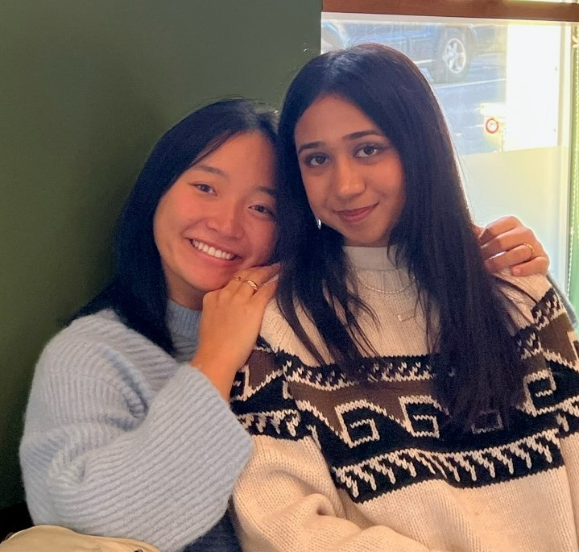
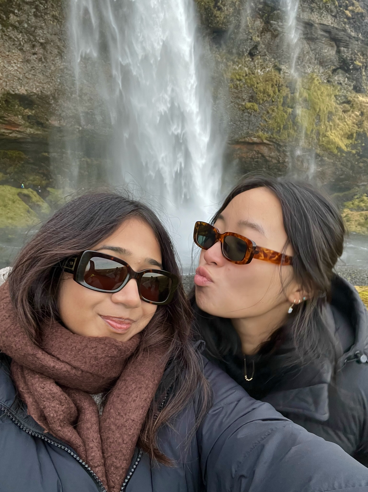
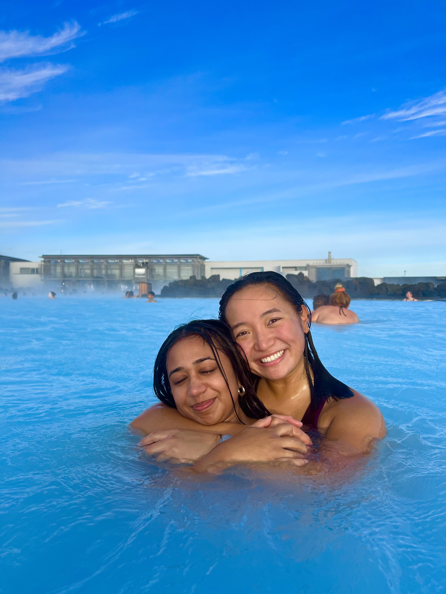

Tia Goyal, from Cupertino, CA

Went to Monta Vista High School
When and how we met: Tia and I were in the same pledge class (Go Etas!) for Alpha Kappa Psi our freshman year of Babson. We didn’t get close until the second half of our sophomore year during COVID 2021. There are some people that come into your life that you didn’t even know you needed at the time. We had an AKPsi retreat to Cape Cod March 2021, and she and I ended up really bonding at a time in my life when I really needed a friend like her.
What makes Tia special: Tia is an incredibly independent and intelligent girl; her personality & the way she moves through life is all a breath of fresh air for me. She is chaotic, ambitious, and peaceful all at once. The connotation of TK (Tia & Kate) is basically that we can accomplish anything we set our minds to as long as her and I talk it out and manifest it. No matter how long it takes, or how impossible it may seem, TK = you can do it. Tia consistently makes me feel inspired, in a way that gives me so much energy and confidence to live life to the fullest.
Why Tia inspires me: Tia is one of the most thoughtful humans I have ever met. Always putting her friend's needs and happiness before her own. Always thinking of ways to push the boundaries for herself to live up to her potential. I am proud of her for finding her own happiness throughout all the experiences she has had from California, Boston, and London. I look up to the way she puts 110% of her energy into the things and people that she truly cares about and is passionate about. I admire her work ethic, her confidence, and her outlook on life. Everything in her life, everyone has a purpose, a meaning. She understands that time is valuable, and the person she is and the things she has accomplished shows that.
Dec 2022 What is Tia up to: Come December 2022 Tia will be graduating. She will be traveling across the world for the next 6 months - to conferences, with friends, leisurely, for professional endeavors, working, and more. She has accomplished so much at Babson, abroad at the London School of Economics, and through all the internships she’s had (L’Occitane being her most recent one). She has big dreams and I am so excited to come back and update this in the next 6 months for another entry on what she has accomplished after graduation.
Hobbies:
- Fashion
- Makeup
- Traveling
- Cooking
- Cafe, coffee, tea fanatic
- Buying Plushies
Top 3 memories:
-
Miami 1.0, 2.0 - Manifesting to the Moon
- TK Island; meeting Brock/Fries
- Iceland, NYC, London
Tia's Dreams: “To never stop learning, be safe and happy with the people I love and making an impact where I go.” Tia has always been passionate about social justice and education. She is also passionate about makeup and fashion. She is also passionate about tech and media. Tia has many interests and many curiosities, like me, she is a learner, a curious individual, so I would not be surprised if Tia finds a way to merge all her interests and make her passions her living. For later in our lives, Tia and I have this crazy TK Island dream: we both realize the high quality friends and mentors we have in our lives are hard to come by, so why not make an island or property where all our friends live, and only the top of the top-notch people can join/come to the island. We realize we are who we are and we want to push ourselves to become the dream versions of ourselves because people around us are so accomplished, intelligent, driven, and they believe in us to accomplish the things we dream to do.

